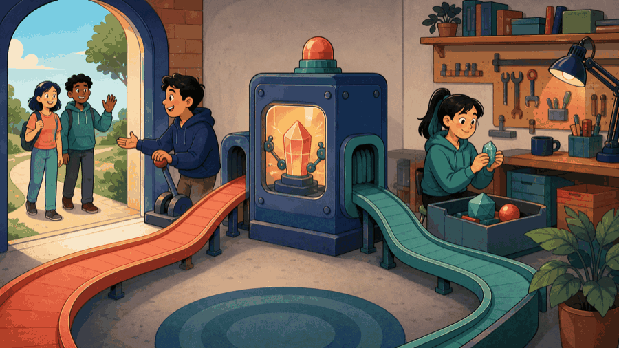
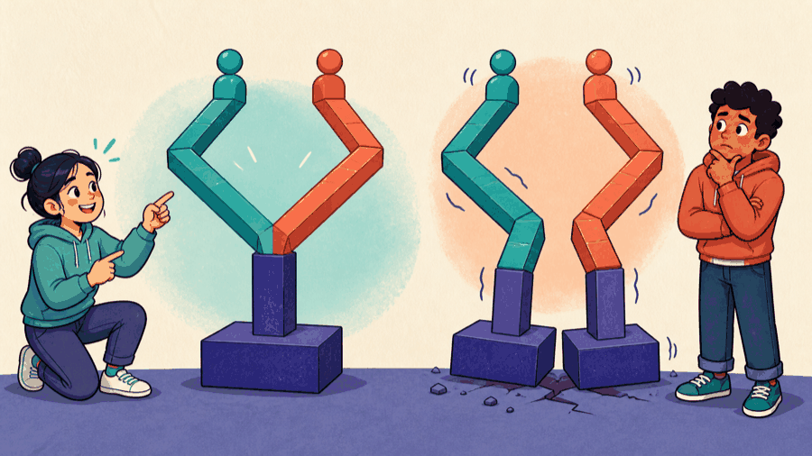
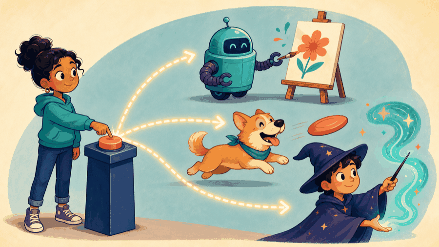

# Lecture 20: Select runtime behavior through safe interfaces ## Select behavior from the runtime object safely **Instructor:** [Dr. Debasish Pattanayak](https://drdebmath.github.io)
## The caller depends on an abstraction. · Create notifications through one interface A factory returns a base pointer; virtual dispatch selects the concrete notification without conditionals at the call site. ~~~cpp #include <memory> #include <string> class Notifier { public: virtual std::string send() const = 0; virtual ~Notifier() = default; }; class Email : public Notifier { public: std::string send() const override { return "email sent"; } }; std::unique_ptr<Notifier> makeNotifier() { return std::make_unique<Email>(); } ~~~ **Takeaways** - The caller depends on an abstraction. - Virtual dispatch replaces type-switching. - The factory centralizes object creation.
## The general form of a virtual function, an override, and an interface ~~~cpp class <Base> { public: virtual <return type> <operation>() = 0; // pure virtual: no default behavior virtual ~<Base>() = default; // required to delete through a base pointer }; class <Derived> : public <Base> { public: <return type> <operation>() override; // override: the compiler checks the match }; <Base>* <p> = new <Derived>(); <p>-><operation>(); // selects <Derived>'s version from the runtime type delete <p>; // safe only because ~<Base>() is virtual ~~~ | Part | Meaning | | --- | --- | | <code>virtual</code> | The call selects the override from the object's runtime type, not from the pointer's declared type. | | <code>= 0</code> | Makes the class abstract: it cannot be instantiated, and every derived type must supply the operation. | | <code>override</code> | Optional but always worth writing — a signature that fails to match becomes a compile error instead of a silent second function. | | `virtual ~<Base>()` | Without it, `delete <p>` through a base pointer is undefined and the derived part is never destroyed. | | slicing | Copying a `<Derived>` into a `<Base>` <em>value</em> discards the derived part. Use a pointer or reference. | Polymorphism needs a pointer or a reference: a by-value `<Base>` can only ever behave as a `<Base>`.
## Public and private inheritance make different interface promises - Public inheritance preserves the base interface and models is-a. - Private inheritance is an implementation technique and does not promise substitutability. Composition is usually clearer than private inheritance.
## Virtual inheritance shares one common base in a diamond Multiple inheritance gives one derived class more than one direct base. In a diamond, virtual inheritance can share one common base subobject. Use these mechanisms only when the domain model genuinely requires them; they are not the starting point for polymorphism.
## Two inheritance arrows look identical from far away <figure class="course-meme-figure"> <p></p> <figcaption> <p class="course-meme-setup"><strong>Setup</strong> Two inheritance arrows look identical from far away.</p> <p class="course-meme-punchline"><strong>Punchline</strong> Up close, only one door lets outsiders through at all.</p> </figcaption> </figure>
## A virtual function selects the override from the runtime type ~~~cpp class Shape { public: virtual double area() const = 0; virtual ~Shape() = default; }; class Square : public Shape { double side; public: explicit Square(double s) : side(s) {} double area() const override { return side * side; } }; ~~~
## A virtual destructor makes base-pointer deletion safe ~~~cpp std::unique_ptr<Shape> shape = std::make_unique<Square>(4.0); double result = shape->area(); ~~~ The virtual destructor makes deletion through the base interface safe. Lecture 21 will place differently typed objects in one owning container.
## The diamond has two routes to the same ancestor <figure class="course-meme-figure"> <p></p> <figcaption> <p class="course-meme-setup"><strong>Setup</strong> The diamond has two routes to the same ancestor.</p> <p class="course-meme-punchline"><strong>Punchline</strong> Share the foundation, or the structure quietly gets two of them.</p> </figcaption> </figure>
## A factory centralizes construction behind the interface ~~~cpp std::unique_ptr<Shape> makeSquare(double side) { return std::make_unique<Square>(side); } ~~~ A factory returns an abstraction while choosing a concrete type in one place.
## Game evolution: One interface selects an actor at runtime | Today's concept | Exact game part enabled | |---|---| | virtual dispatch, base ownership, and factory | create one concrete actor while the game uses only its interface | ~~~cpp #include <cassert> #include <memory> struct Actor { virtual char mark() const=0; virtual ~Actor()=default; }; struct Snake:Actor { char mark() const override { return 'S'; } }; std::unique_ptr<Actor> makeSnake() { return std::make_unique<Snake>(); } int main() { std::unique_ptr<Actor> actor=makeSnake(); assert(actor->mark()=='S'); } ~~~ **Substitution test:** <code>main</code> never needs the concrete type after construction. **Next unlock · L21:** own several differently typed actors in one world.
## Every derived type must pass the base-level tests For every derived type, test: - calls made through a base reference; - cleanup through base ownership; - invalid constructor inputs; - behavior added by a new derived type without changing existing callers.
## The controller asks for one action, not one type <figure class="course-meme-figure"> <p></p> <figcaption> <p class="course-meme-setup"><strong>Setup</strong> The controller asks for one operation without knowing the concrete type.</p> <p class="course-meme-punchline"><strong>Punchline</strong> The object picks its own override; the caller never had to ask.</p> </figcaption> </figure>
## Interfaces, safe ownership, and substitutability earn polymorphism - Public inheritance promises substitutability. - Dynamic dispatch selects an override at runtime. - Polymorphic bases need virtual destructors. - Own derived objects with smart pointers. - Factories separate construction choice from use.
## Verify Create notifications through one interface with a claim, trace, boundary, and improvement Use the practical example as a small experiment. Before you leave, make the reasoning visible: - **Claim:** The caller depends on an abstraction. - **Trace:** name the state that changes and the observation that would confirm it. - **Boundary:** choose one smallest, largest, empty, or invalid input that could expose a defect. - **Improvement:** explain one change that would make the solution clearer or safer. ### Exit ticket Choose one problem to solve now and two to attempt in the lab: - Model a diamond hierarchy and resolve it using virtual inheritance. - Compare public and private inheritance with a working example. - Implement a Shape hierarchy and compute total area polymorphically.
## Explain Create notifications through one interface without opening the code Explain today’s idea to a partner without opening the code: 1. State the input, output, and one rule the solution must preserve. 2. Point to the operation that makes progress or changes the state. 3. Name the first test you would run after changing the implementation. If the explanation needs “and then another unrelated thing,” split the design before you code.
## Solve five problems to transfer Create notifications through one interface **IC151 lab practice · 5 problems** 1. Model a diamond hierarchy and resolve it using virtual inheritance. 1. Compare public and private inheritance with a working example. 1. Implement a Shape hierarchy and compute total area polymorphically. 1. Create a factory that builds payment strategies from a code. 1. Trace construction and destruction order in multiple inheritance. Reaching this set marks the lecture as studied in this browser. [Open the IC151 lab setup and batch schedule](ic151.html).
## Let sweep, nearest-dirt, and cautious agents act through one controller. **Studio thread:** Run multiple agent policies | Ask | Today’s answer | |---|---| | **Problem** | Let sweep, nearest-dirt, and cautious agents act through one controller. | | **Model** | The environment requests an action without knowing the concrete policy type. | | **Represent** | A virtual interface and one unique_ptr-owned agent. | | **Solve** | Use dynamic dispatch; centralize concrete creation in a factory. | | **Verify** | Call through the base interface and test cleanup plus invalid construction. | | **Improve** | Add a policy without changing the simulation loop. | **Technique lens:** runtime polymorphism and simulation **Compare:** a growing type switch versus virtual dispatch